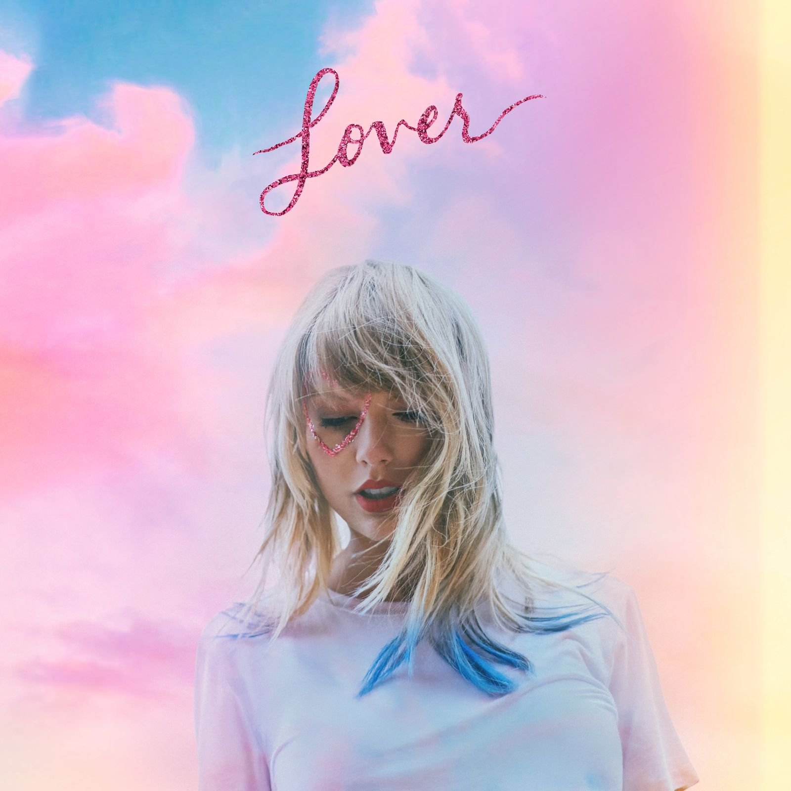
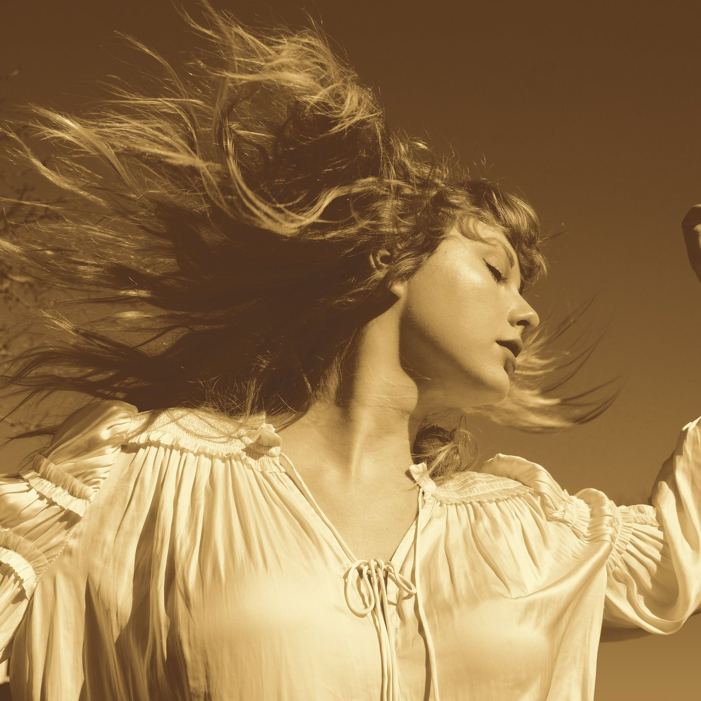

Taylor começou sua carreira cedo aos 10 anos de idade, e foi a artista mais jovem a conseguir compor uma música que chegasse ao topo das paradas americanas com apenas 17 anos. Com o tempo foi conquistando a atenção de empresários de Nashville e com isso, conquistou seu primeiro contrato dentro de uma gravadora Big Machine Records.
No começo de sua carreira Taylor sempre investiu muito na música country, pois era um dos seus gêneros favoritos quando era adolescente, e as letras sempre retrataram como sua vida poderia ser se fosse um conto de fadas, ou até mesmo algum momento difícil de sua vida como podemos ver em seu primeiro álbum titulado, seja ela familiar ou amorosa. Fez sucesso com seu álbum Fearless, sendo premiado no Grammy de 2010 na indicação de melhor álbum do ano.
Conforme o tempo foi passando Taylor começou a arriscar um pouco mais suas composições em músicas pop, então ela lançou o RED que é uma mistura e um “teste”, para ver se o público que a escutava iria aceitar de forma positiva que ela migrasse sua música para o gênero pop, com resultados positivos, vistos em We Are Never Ever Getting Back Together e I Knew You Were Trouble, Taylor logo em seguida lançou seu 5º álbum de estúdio 1989 com gênero 100% pop, sendo o maior auge de sua carreira, levando para casa um Grammy, na indicação de melhor álbum do ano na edição de 2016.
passou por muitas frustrações ao longo de sua longa jornada, o que alavancou a ficar sumida durante um ano, em seguida lançar seu 6º álbum de estúdio Reputation, no qual conta suas irritações com pessoas do ramo da música e sobre como era vista diante todos.
Em 2020, em época de pandemia, Taylor lançou Folklore como seu 8º álbum de estúdio, um trabalho completamente diferente do que costuma fazer e que revolucionou a indústria de modo inovador, e foi muito bem recebido quebrando recordes de vendas e o primeiro álbum a passar 8 semanas consecutivas em primeiro lugar na HOT100 da Billboard, a parada de charts mais importante dos Estados Unidos e 5 meses depois ela lançou o irmão do Folklore o seu 9º álbum de estudio Evermore. Em 2022, Taylor recebeu o título de doutora honorária de artes plásticas pela Universidade de Nova York. O título de Doutora em Belas Artes, é concedido para aqueles que se destacaram nessa área de atuação, mas não cursaram o doutorado na Universidade. Logo após no mesmo ano, Taylor lançou o seu 10º álbum de estúdio no qual retrata um pouco de sua biografia durante toda sua carreira, trazendo um pouco do pop/rock, quebrando a maioria dos recordes como ser o álbum mais transmitido em um único dia na história do Spotify.
Ao todo Taylor Swift possui 12 álbuns de estudio (contando com as regravações), e ao todo acumula 11 Grammys que é o premio mais importante da indústria da música.
O que a torna uma artista impactante para a indústria atualmente, e o fato dela cantar somente músicas que ela mesma escreveu, em sua grande maioria sozinha. Durante sua carreira, quando Taylor decidiu se retirar da gravadora Big Machine Records, ela perdeu todos os direitos dos seus “masters”, como é dito no termo em inglês para se referenciar as gravações de uma música. Entretanto, ela ainda possuía seus direitos da composição de todas as músicas já que foi a mesma as quem escreveu, porém não foi nada fácil para Taylor conquistar todos os direitos. Para que ela conquistasse tal ato, no entanto ela decidiu-se regravar todos os seus 10 álbuns de estúdio e ter todos os direitos de seu trabalho, tudo isso com muita determinação e planejamento para que ela possa reconquistar todas as obras que escreveu ao longo de sua carreira.
Diante todos esses acontecimentos Taylor serve de inspiração para todos os seus fãs como poder administrar melhor os seus negócios, ter lideraça diante diversos projetos, a empatia de poder ajudar o próximo caso ele esteja passando por uma situação dificil, sem contar que ela é uma baita inflûencia para que os novos prodígios comecem a compor suas próprias músicas e estimula-las a seguirem os seus próprios sonhos, independente da dificuldade, podendo assim ajudar a fazer com que eles evoluam evoluão e se tornem seres humanos melhores dia após dia.